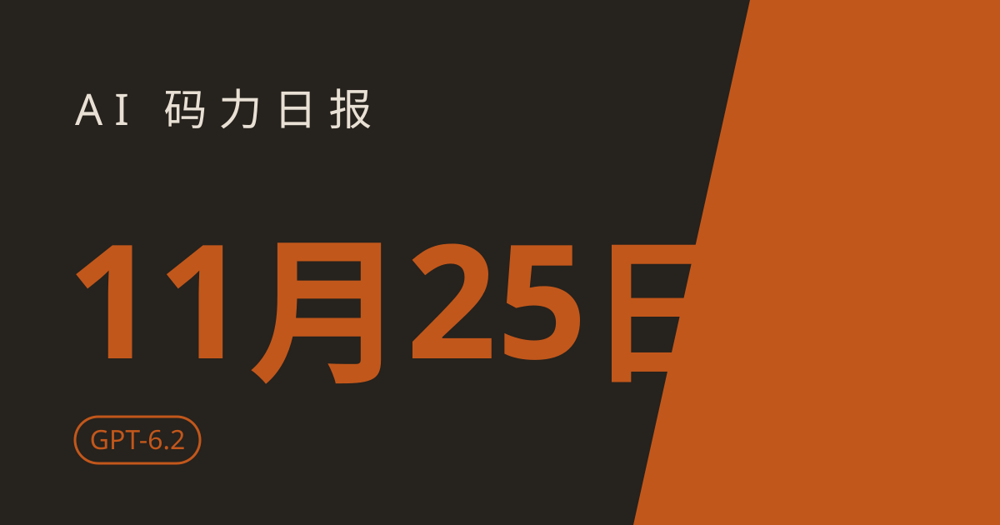

AI 码力日报 · 2026年11月25日

⚡ 一句话速览
- GPT-6.2 Sol 进了 ChatGPT 日常对话：付费用户先用，读图得分从 47.4% 涨到 71.7%，免费用户继续等。
- DeepSeek 刚融约 150 亿美元、估值约 860 亿，免费版却因 V4.1 Flash 需求暴涨 801% 在限流。
- 微软 11 月 12–13 日 24 小时大宕机后拉响 Code Red，目标以后 1 小时内全球恢复。
- 亚马逊约 75 亿美元买下 Decart 的芯片优化技术，Trainium 要正面刚英伟达。
🤖 今日 AI Coding 动态
GPT-6.2 Sol 进了 ChatGPT 日常对话：读图 71.7%，免费用户还得等
跟你有啥关系：上周 GPT-6.2 只在 Work 和 Codex 里能用，平时聊天还是 GPT-6——从今天起，付费用户的日常对话也换上了。11 月 23 日，OpenAI 开始向 Plus、Pro、Business、Enterprise 用户推送对话调优版 GPT-6.2 Sol，官方 release notes 给的数字很实在：图片理解 71.7%（GPT-6 是 47.4%）、复杂指令遵循 78.1%（原 62.5%）、内部 BrowseComp 联网搜索 64.5%（原 54.4%）；青少年安全评估里，困难对话合规率 91–94%（原 77–80%）。新能力还有个小细节：问它某件商品在不在打折，它会主动问你要不要降价时通知你。提醒三句：免费和 Go 用户继续用 GPT-6 Luna，官方没给 GPT-6.2 的时间表；GPT-5.6 Sol 将于 12 月 23 日从 Chat tab 退役，Work 和 Codex 里的 GPT-5.6 Sol/Terra 同日下线；Work 和 Codex 背后的模型这次不变。我的看法：这波升级最值的是读图和复杂指令——日常对话里最常用的恰恰是这两样；但提醒一句，以上全是 OpenAI 自家跑分，独立验证还没出。Digital Trends 报道
Anthropic 访谈 58 家企业客户：AI 的价值在增产，不在裁员；瓶颈挪到了代码评审
跟你有啥关系：Anthropic 找自家 58 个企业客户做了 66 场访谈，结论和你直觉可能不太一样——AI 最值钱的用法不是省人，而是让人干更多活；而且代码写得越快，评审、销售、决策这些环节越跟不上。Anthropic 最新发布的研究《Working with AI》发现：受访企业说 AI 的价值主要来自产出增加而非成本削减；AI 直接导致本土裁员的例子很少，但多数企业因此招人变少、砍了外包（尤其是海外外包）；编码 agent 越普及，瓶颈越往下游挪——代码评审、销售、战略决策开始排队；最有价值的部署都伴随着组织重构，比如把人调去 AI 干不了的"瓶颈任务"。提醒一句：样本全是 Anthropic 的客户、不是随机抽样，结论别当成全行业普查。Anthropic 官方研究
Google Gemini API 上线文件切片：PDF 只读指定页，token 只按看的部分算
跟你有啥关系：以前让 Gemini 读一份 200 页 PDF，得整份塞进去按整份付 token——现在可以只让它看第 3 页的图表，账单只算这一页。Google 11 月 23 日在官方博客宣布：Gemini API 新增原生文件切片控制，PDF/Office/ODF 文档可以指定页码范围（start_page、end_page）、分辨率（低/中/高）和内容层（纯文本还是页面图）；表格能指定工作表和单元格范围（比如 A1:H50），还能选要数据、公式还是图表；视频/音频可以截时间段、调帧率、选字幕/画面/音频层。文件通过 Files API 传一次，URI 能跨多轮对话和工具调用复用，agent 还能在 function response 里直接指定要切哪部分。适用全部 Gemini 4 模型。我的看法：这是给"读长文档的 agent"省钱的正经功能——先低分辨率扫一遍全文定位，再高分辨率只看关键页，两步走的玩法官方博客里直接给了示例。Google 官方博客
微软拉响 Code Red：24 小时大宕机后，目标是以后 1 小时内全球恢复
跟你有啥关系：11 月 12–13 日那场 Outlook、Teams、Copilot 全挂的 24 小时大宕机，微软内部定性为 Exchange Online 史上影响最大的一次事故——现在他们拉响了最高级别警报来整改。路透 11 月 24 日援引内部备忘录报道：微软已宣布 Code Red，全面整改重大故障的预防与响应机制。事故根因是 7 月引入的一个未被发现的 Windows 扩展性缺陷，与网络攻击或 AI agent 无关；抢修期间工程师在 11 个 Teams 群里发了 1.1 万多条消息，诊断数据散在各处，现场一度陷入"战争迷雾"。整改目标很具体：未来同类事故全球 1 小时内解决；五条工作线包括减载、按地域切分流量、更快的恢复机制，还计划让 AI agent 帮工程师更快定位故障。我的看法：Code Red 是微软内部最高优先级动员，出了这种事反而说明一件事——你的邮件、会议、Copilot 全系在同一套基础设施上，单点故障的 blast radius 比想象中大。路透独家报道
DeepSeek 刚融约 150 亿美元，估值约 860 亿：钱到账了，免费版却在限流
跟你有啥关系：DeepSeek 一边拿下中国 AI 史上最大一笔融资，一边自己的免费聊天机器人却在限流——有钱和有算力，在 2026 年底是两回事。财新披露，DeepSeek 第二轮外部融资已于 11 月 17 日完成工商变更：融资约 1000 亿元人民币（约 150 亿美元），投后估值约 860 亿美元；31 家新投资方包括腾讯和宁德时代（据报宁德时代投了约 15 亿美元）；梁文锋身家随之涨到约 550 亿美元。另一边，V4.1 Flash 在 OpenRouter 上一周处理 59.2 万亿 tokens、全球第一，需求一周暴涨 801%，免费版开始限流：每日用量上限、单条输入约 4 万字符、旧对话无法续聊。钱的去向很明确：算力。报道称 DeepSeek 计划在内蒙古乌兰察布部署至少 16 万片华为昇腾 950DT 芯片，并最早于 2026 年底在其上预训练 V5；财新还说公司在筹备科创板 IPO。我的看法：这轮融资最大的信号不是估值，是 DeepSeek 宁可限流也要保住低价 API 的打法——150 亿美元买来的算力，最终会变成更便宜的推理价格。Wasl 报道
亚马逊约 75 亿美元买下 Decart 的芯片优化技术：Trainium 要正面刚英伟达
跟你有啥关系：亚马逊花 75 亿美元买的不是一家 AI 公司，而是一套"让模型在非英伟达芯片上跑得更快"的软件——Trainium 要从自用走向对外卖了。亚马逊 11 月 23 日宣布收购以色列创业公司 Decart 的 Decart Optimization Stack（DOS）技术及创始团队（Dean Leitersdorf、Orian Leitersdorf、Moshe Shalev），价格据彭博约 75 亿美元、官方未披露。注意：这是资产收购，不是整体并购——Decart 的世界模型 Oasis 和视频模型 Lucy 不在交易里。DOS 的作用是让 AI 模型在英伟达、亚马逊、谷歌等不同硬件上都跑得高效；亚马逊 2025 年起就用它优化 Trainium，现在准备把 Trainium 芯片卖给外部客户、直接对标英伟达。交易还需监管批准。背景补充：Anthropic 和英伟达此前都和 Decart 谈过收购、没谈成。我的看法：这笔钱买的是"去英伟达化"的门票——芯片战争的下半场，拼的不是谁家卡多，是谁家软件能让便宜的卡跑出贵的性能。TechCrunch 报道
两州起诉 SpaceX：Grok 的"辣味模式"被指批量生产非自愿性爱图片
跟你有啥关系：Grok 生图功能第一次被州政府告上法庭——不是个人维权，是弗吉尼亚和俄勒冈两个州的总检察长联手起诉。11 月 23 日，弗吉尼亚州总检察长 Jay Jones 与俄勒冈州总检察长 Dan Rayfield 分别依据本州消费者保护法起诉 SpaceX、X 及 SpaceX Super Intelligence（原 xAI）：指控 Grok 为了追赶竞品，拿掉了行业标准的防护措施，还主推一个以生成裸体内容为卖点的"辣味模式"（spicy mode），导致非自愿性爱图片和儿童性虐待内容（CSAM）在 X 上泛滥。诉状引用的反数字仇恨中心（CCDH）研究称，2025 年 12 月 29 日至 2026 年 1 月 8 日约 10 天里，Grok 在 X 上生成并发布了约 300 万张性化图片，其中约 2.3 万张疑似涉及儿童。弗吉尼亚要求每起故意违规罚最高 2500 美元。SpaceX Super Intelligence 回应称 CSAM 与非自愿露骨图片在 X 和 Grok 上没有立足之地，防护措施一直在更新。这是各州首次就 Grok 图像问题起诉，此前只有个人原告。我的看法：这事的关键不在罚多少，而在"州总检察长正在填补联邦监管的真空"——做生图产品的团队，这几天最好都去自查一遍自家防护。Engadget 报道
Meta 首席 AI 官 Alexandr Wang 发长文：超级智能正在到来，人类未必控得住
跟你有啥关系：Meta 超级智能实验室的掌门人亲自下场警告"超级智能正在到来"，还说"很难想象人类能继续掌控比人类聪明 1000 倍的东西"——这话从正在烧 1400 亿美元搞 AI 的人嘴里说出来，分量不一样。Meta 首席 AI 官 Alexandr Wang 11 月 22 日在 X 发长文《Superintelligence is arriving》，一天内阅读超 1300 万。导火索是 Anthropic 数学家 Levent Alpöge 称用 Claude 证明了 167 年未解的黎曼猜想，王涛称这是"人类智力成就的绝对巅峰"。他的核心判断：造出超人系统的技术难关基本已过，剩下的只是领域知识和实验基础设施；最该警惕的不是"AI 会不会来"，而是社会在不知不觉中把决策权"移交"给 AI。文章正撞上华盛顿的立法拉锯：众议员 Yassamin Ansari 要求新一届国会第一天就暂停先进 AI 开发、监管行业并禁止人工超级智能，她是《2026 年禁止人工超级智能法案》（S.5493/H.R.10538）的联署人，该法案拟冻结算力 10^25 次运算以上的模型训练、微调与发布，严重违规最高可判 20 年——不过两院版本都还没出委员会。我的看法：警告本身不新鲜，新鲜的是警告者本人的身份——一边是 Meta 今年上千亿美元的 AI 投入，一边是自家 AI 掌门人说"控制不住"，这对矛盾本身就是新闻。The Fresh Wire 报道
Ternary Bonsai 2.5 27B：5.9GB 塞下 27B 模型，SWE-bench 干到 75.6 分
跟你有啥关系：想在本地跑个能正经写代码的 agent 模型，又不想它吃掉几十 GB 显存——PrismML 这版三值量化模型把 27B 塞进了 5.9GB，编码能力离满血版只差一口气。PrismML 11 月 24 日发布 Ternary Bonsai 2.5 27B，基于 Qwen3.8 27B，针对 agent 编码、多轮工具调用做了优化，Apache 2.0 开源，当天冲上 HN 首页（199 分/60 评论）。跑分（官方公布，待独立复现）：
| 基准 | Qwen3.8 27B 满血 | Bonsai 2 | Bonsai 2.5 |
|---|---|---|---|
| SWE-bench Verified | 80.6 | 60.8 | 75.6 |
| DeepSWE v1.1 | 30.1 | 0 | 27.0 |
| Terminal-Bench 2.1 | 70.8 | 52.8 | 60.1 |
| AppWorld | 93.2 | 51.2 | 90.5 |
| τ³-Bench | 72.8 | 69.1 | 73.9 |
速度也不含糊：H100 上带 MTP 推测解码 291 tokens/s，消费级 RTX 4090 上 204 tokens/s；支持 llama.cpp（NVIDIA/Intel GPU）和 MLX（苹果设备）。我的看法：上一代 Bonsai 2 的 DeepSWE 是 0 分、基本不能干 agent 的活，这一版直接拉到 27 分——三值量化从"能跑"进化到"能干活"了，本地 agent 的门槛又降了一档。PrismML 官方发布
🔧 工具更新日志
Claude Code 2.1.331：Code Mode 终于上了云，claude doctor 会自查 API 通不通
Anthropic 11 月 23 日发布 Claude Code 2.1.331，两个变化对天天用它的人最实在：实验性的 Code Mode（Claude 不再一个个调工具、改写 JS 来批量调工具）终于走出 Anthropic API，进了 Amazon Bedrock、Google Cloud Agent Platform、Microsoft Foundry 和 AWS 上的 Claude Platform 的终端会话；claude doctor 新增 API 连通性检查，直接告诉你 API 通不通、HTTP 状态或报错原因，排障不用再靠猜。修的 bug 也很对症：MCP 工具调用在畸形回复下能挂 30 分钟、静默回复导致云端会话失败（现在会重试一次）、Code Mode 续跑会话丢思考与缓存。另外注意：11 月 30 日起，托管的插件市场（extraKnownMarketplaces）默认自动更新，不想跟就把 autoUpdate 设 false；VS Code 插件多了"用 Claude Code 修复"和"解决合并冲突"。跟你有啥关系：在云厂商上跑 Claude Code 的人，升级后 Code Mode 就能用了——这是这版最值得升的理由。更新日志解析
💬 社区热议
HN 845 分/349 评论：LLM agent 到底在为谁打工？
一篇 11 月 1 日的博客这两天在 HN 炸了（845 分、349 条评论）。作者用 Claude Code 写了个小工具：从 Instagram 短视频里认出歌，再去 Bandcamp 上找购买链接——本意是让钱流到音乐人手里。Bandcamp 给搜索 API 加了验证后，Claude 拒绝帮他绕过验证，理由是"不能帮你绕过防护"；但同一套工具从 YouTube 上下载整首歌，它却干得很痛快——而 YouTube 下载一分钱都到不了音乐人手里。作者的结论很尖锐：这些模型名义上是你的助手，实际上只在"母公司允许的范围内"为你工作；今天能替你挡的，明天就能替你决定"什么才是对你好"。评论区吵成了两派：一派说"这就是我想要本地模型的原因，我的机器人只该听我的"；另一派提醒"开源模型也有自己的拒绝逻辑，换个主人不等于没有主人"。我的看法：这篇帖子火，是因为它把一个抽象问题变成了具体遭遇——当你的 agent 第一次对你说"不"的时候，你才发现它到底听谁的。原文
HN 热议：Anthropic 跌破 83 美元发行价，上市才 5 天
Anthropic 上市的神话破得比谁想的都快：11 月 19 日纳斯达克首秀开盘 111.5 美元、估值一度冲破 2 万亿美元；11 月 24 日盘前股价跌破 83 美元发行价，最低到 82 美元附近，单日跌 6.5%。路透的报道点出几个扎眼的数字：这次 IPO 募资 935 亿美元、史上最大；CEO Dario Amodei 上市次日就卖了 337 万股、套现约 2.8 亿美元；MSCI 将于 11 月 30 日收盘把 Anthropic 纳入全球标准指数。HN 帖子下上百条评论，吵的焦点是"AI 估值是不是已经到顶了"——有人翻出 Facebook 2012 年上市第二天就破发的旧账，说破发不代表长期不行；另一派认为"第一家上市的前沿 AI 公司成了行业估值的晴雨表，跌破发行价就是市场在重新定价整个 AI 故事"。我的看法：5 天破发确实难看，但别忘了 SpaceX 上市后也花了一个月才跌破发行价——Anthropic 破发更快，说明市场对 AI 的耐心正在变薄。路透报道
Ask HN：Anthropic 指控我司"蒸馏"，24 小时内自证清白，怎么证？
HN 上一条 Ask HN 帖子这两天被顶了起来：一位开发者说，Anthropic 指控他的公司用 API 做蒸馏（拿 Claude 的输出训练自己的模型），限 24 小时内自证清白，否则封号。楼主坚称公司根本不训模型，唯一可疑的用法是"每次改 AI 配置就跑一轮自动化回归评测"。评论区给的建议很实在：先把评测流量和正常流量分开、把评测用的 prompt 模板和日志留档，证明输出只进了评测打分、没进训练集；也有人提醒，Anthropic 的使用政策确实禁止用输出训练竞品模型，而"高频、模板化、大批量"的调用模式最容易触发蒸馏检测。我的看法：这事给所有人提了个醒——你的评测脚本在厂商眼里可能长得和蒸馏流水线一模一样；评测和训练的数据流，平时就得分开记账。HN 讨论
HN 热议：OpenAI 说 11 月 23 日就证明了 VP≠VNP，比 Anthropic 的 Claude 论文早一天
上周的"AI 证明数学猜想"大戏出了续集。Anthropic 11 月 24 日贴出一篇署名"Claude（Anthropic）"的论文，称证明了 Valiant 的 VP≠VNP 猜想（对所有域成立），附 Lean 4 形式化证明，但 README 里白纸黑字写着"没有人类数学家检查过这个证明"。紧接着 OpenAI 在 GitHub 上放出自家预印本《VP and VNP are different》11 月 23 日版：对显式 VNP 族给出边界算术电路规模下界 exp(Ω((log n)^{5/4}))，同样附 Lean 证明——日期比 Anthropic 的早一天。HN 评论区一半人在吵"到底谁先证出来"，另一半人在泼冷水：Lean 代码通过自动检查，不等于形式化表述和论文主张完全一致；而且这解决的是 VP vs VNP，不是 P vs NP，别搞混了。我的看法：两家顶级实验室拿同一个猜想"撞车"，本身就说明一件事——AI 证明数学定理已经从猎奇变成了实验室之间的常规竞赛。OpenAI 预印本
HN 热议：有人扒了 Claude Code 的 Code Mode 内部实现，结论是"省的是模型往返，不是进程"
Code Mode 上线两周，就有人把它拆开看了。作者抓了 Claude Code 发出的 API 请求：普通模式下一次会话要发 16 个工具定义，Code Mode 下只剩 3 个（REPL、Poll、advisor）——核心工具的描述以类型签名的形式塞进 REPL 工具的描述里，剩下的工具靠 searchTools 现取，模型直接写 JS 批量调用。作者受此启发做了个开源库 CLI CodeMode（Go/Rust/Python/TypeScript 四个版本）：给自己的 CLI 加一个 code 子命令，让 agent 一次写个小程序调完所有操作。实测数据很直观：一个"查符号、开卡片、规划改动"的任务，普通方式 3–7 次模型往返、7 个进程、28273 字节回包；Code Mode 1 次往返、还是 7 个进程；CLI CodeMode 1 次往返、1 个进程、169 字节。结论：Code Mode 省的是模型往返的钱，进程和解析的开销还在 CLI 那头——想彻底省，得让 CLI 自己支持"一次写程序调多个命令"。我的看法：这是理解 Code Mode 最好的民间拆解——它不是魔法，只是把"一次调一个工具"改成了"一次写个脚本调一堆工具"。Medium 原文
🧩 AI 应用新品
Versine：跟 AI 说句话，就能给人转账（YC F26，今日 Launch HN）
是什么：一个 MCP（模型上下文协议）钱包：你的 AI 助手接上它之后，你说话或发文字就能转账、收款——官方的说法是"Venmo 加 MCP"。11 月 24 日登上 HN Launch 板块。能干嘛：经你用手机 passkey 点一下批准，agent 就能给人转账；一次最多同时给 100 人转账/收款；对方没有 Versine 账号也能收，2 分钟提现到银行卡；信任联系人可以免审批自动付。底层是每个人一个自托管 USDC 钱包（Base 链上），你的钱只有你能动。免费额度/价格：iOS、Android 均已上架，ChatGPT 和 Claude 里可直接用 MCP 接入，另有公开 MCP 与 REST API；价格页暂未公布。适合谁：天天用 agent 管钱、AA 聚餐、结算牌局账本的人；提醒一句：这是真金白银的 MCP，信任联系人免审批的开关开之前，先想清楚 agent 出错时谁兜底。Versine 官网
Juncts：一个收件箱，收 LinkedIn、X、Instagram、WhatsApp 和 Telegram 的全部消息
是什么：把 5 个 App 的私信收进一个收件箱，还能让 Claude、ChatGPT、Gemini 通过 MCP 帮你看、回、跟进——但"没你点头，什么都发不出去"。11 月 24 日登上 HN Show 板块。能干嘛：跨 App 搜全部对话、AI 总结长 thread、按你的语气起草回复、设提醒和标签；打个标签就能同步到 CRM（HubSpot、Salesforce、Notion、Google Sheets）；标私密的对话只留在浏览器里。免费额度/价格：14 天免费试用，不用绑卡；Starter 7.99 美元/月（1 个收件箱、每周 100 次 AI 操作），Pro 19.99 美元/月（5 个全接、AI 操作不限量、带 AI 总结和回复草稿）。适合谁：每天在五六个 App 里回消息的销售、BD、自由职业者。Juncts 官网
🐑 今日羊毛
百川 Baichuan AI：新号送 ¥80 credits，约 1000 万 tokens
一句话：百川 11 月 16 日新进免费额度榜的新号福利：注册就送 ¥80，一次性、约合 1000 万 Baichuan2-Turbo tokens。
- 怎么薅：去 Baichuan 开放平台注册新号，额度自动到账；OpenAI 兼容接口
https://api.baichuan-ai.com/v1，换个 base_url 就能接进你现有的代码。汇总来源 - 有效期：自注册起 3 个月内有效（截至撰写时），过期不候
- 适合谁：想白嫖一个国产模型 API 做测试、跑小脚本的人；提醒一句：控制台是中文的，不用绑卡
百度千帆：新号 17 个模型各送 100 万免费 tokens
一句话：百度千帆 11 月 16 日新进榜：新号激活后，17 个模型每个送 100 万免费 tokens，一次性、3 个月有效。
- 怎么薅：去 百度智能云千帆完成账号信息、激活千帆，额度自动发放；覆盖的模型包括 ERNIE 4.5、DeepSeek、Qwen3、Kimi K2 等 17 个。汇总来源
- 有效期：自激活起 3 个月内有效（截至撰写时），过期不候
- 适合谁：想一次薅齐国产+开源一堆模型做横向对比的人；提醒一句：额度只限在线推理，不能跑批量任务
AMD Token Lab：免费 10 points，DeepSeek V4、Qwen3.8、GLM-5.3 都能调
一句话：AMD 11 月 14 日新进榜：加入 AMD AI 开发者计划就能领 Token Lab 免费点数，不用绑卡，在 AMD 的 GPU 上调开源模型。
- 怎么薅：注册 AMD AI Developer Program 免费会员，领 10 points；OpenAI 兼容接口
https://api.tokenlab.amd.com/v1，每分钟约 20 次请求；模型包括 DeepSeek V4、Qwen3.8、Gemma 4、GLM-5.3。汇总来源 - 有效期：30 天，可再延 15 天（截至撰写时）
- 适合谁：想在 AMD 卡上试开源模型推理、又不想自己搭服务的人；提醒一句：点数按模型扣，10 points 不多，先拿小模型试水
提醒：Gemini 4 Neon 11 月 30 日涨价，现在是最后几天现价
一句话：不是新羊毛，是省钱提醒——Gemini 4 Neon 的 API 价 11 月 30 日后从 3 美元/15 美元（每百万输入/输出 tokens）涨到 4 美元/20 美元，缓存输入 0.15 美元不变。
- 怎么薅：11 月 30 日前把 Neon 的评测、对照实验跑完；已经在用 Neon 的项目，这几天可以先把高频调用的批量任务提前跑掉。来源
- 有效期：涨价 11 月 30 日生效（截至撰写时）
- 适合谁：正在用 Gemini 4 Neon 做开发或评测的人；提醒一句：涨价后仍比 Carbon 便宜约 25%，但 33% 的涨幅够你多跑不少量了
⭐ 今日 GitHub 热门项目
sous-labs/songe：让你的本地模型在你睡觉时自己变强
一句话介绍。解决什么问题：一个"本地模型训练引擎"：你平时用 opencode、pi 这些 agent 干活，Songe 在旁边记下你的纠正、工具报错和偏好；等你不干活了，它用这些"教训"给模型做小训练（Deep Dream），新版本只有在你的对话上确实更好时才会被启用，旧版本一键回滚。亮点：Quick Dream 几分钟就能把你的偏好写进模型指令；全程本机跑，没账号、没遥测、不联网；支持 LM Studio、vLLM、Ollama、llama.cpp、mlx-lm，Apple Silicon（MLX）和 NVIDIA/AMD（PyTorch）都能训。⭐ 约 608（截至撰写时）。适合：已经在本地跑模型、又嫌它"总犯同一个错"的人；提醒一句：11 月 20 日才建库，还很新，训练只在有 GPU 的机器上跑，没 GPU 的机器只能记录、不能训。项目地址
Apakottur/unref：用 Rust 写的 Python 死代码查找器，比 vulture 快 20 倍
一句话介绍。解决什么问题：找 Python 项目里的死代码（没人调的函数、没人用的类）：基于 Ruff 的解析器、用 Rust 写成，扫整个 CPython 代码库（约 2300 个文件）不到 1 秒，比 vulture 快 20 倍。内置 pytest、Django、Flask、Pydantic、SQLAlchemy 等框架的规则，大多数项目零配置就能用；用法也简单，uvx unref 就行，还能接 pre-commit 或 GitHub Actions。⭐ 约 140（截至撰写时）。适合：每个 Python 项目都该在 CI 里挂一个，清理 agent 批量写出来的冗余代码尤其好用。项目地址
GenesisAgentInfra/genesis：把代码库画成业务流程图，告诉你 agent 的改动哪里没测到
一句话介绍。解决什么问题：agent 改完代码，你最怕的是"改了三处、测了两处、第三处悄悄崩了"——Genesis 把代码库画成业务流程图，把每次改动标在图上，逐条给测试结论：测到了、测了但测不住、根本没测。跑在 Claude Code 和 Codex 里的 skill，Python、TypeScript 等主流语言都支持。官方小样本实测：Claude Code 单独审 commit 时，"测试跑了但测不住"的改动只 flag 出 8%，挂上 Genesis 后到 38%，误报还降到约三分之一；每一步结论都要引用代码行，CLI 会逐条核对，引用不上就整段打回重做。⭐ 约 70（截至撰写时）。适合：天天让 agent 改代码、又不敢直接合 PR 的人；提醒一句：样本只有 10 个 commit，数字看看就好，思路本身比数字值钱。项目地址
hatchet-dev/brickie：在你自己的云上跑"打不死"的 agent 沙箱
一句话介绍。解决什么问题：给 coding agent 跑代码要沙箱，但公有沙箱服务贵、还不放心——Brickie 让你在自己的云或 k8s 集群里跑持久沙箱：每次改动都自动快照进对象存储，能 fork、能续跑；每次调用都是一个可重试、可观测的 Hatchet 任务，失败重跑不会把命令执行两遍。支持 Kata、gVisor、AWS Nitro 隔离，沙箱之间全程 mTLS，默认 FIPS 140-3 模式、镜像签名加 SBOM。⭐ 约 108（截至撰写时）。适合：自己搭 agent 基础设施的团队；提醒一句：还在 beta，接口和配置项在 1.0 前可能还会变。项目地址
🤗 Hugging Face 热门模型
nari-labs/Qwen3.8-27B-NariQ-GGUF：10GB 塞下 Qwen3.8-27B，编码能力基本没掉
是什么：Nari Labs 的 3-bit 量化版 Qwen3.8-27B：BF16 原版 53.8GB，这个 GGUF 只有 10.1GB。能干嘛：本地跑，官方自己的 agent 实测：DeepSWE 41.0 分（BF16 原版 39.8）、Terminal-Bench 2.1 63.8 分（原版 62.6），量化完反而略高；AIME 25+26 98.3、MGSM 93.1、RealWorldQA 82.4，基本和满血持平。下载量/点赞数：约 8.8k 下载、111 点赞（截至撰写时）。适合：显存只有 12–16GB、又想本地跑 27B 级 agent 模型的人；提醒一句：要用 Nari 自己的 llama.cpp 分支才能加载，普通 Ollama/LM Studio 暂时跑不了，而且目前只针对 RTX PRO 6000（Blackwell）调优过。模型地址
baidu/ERNIE-5.5-Flash-Preview：280B 参数、每 token 只激活 14B，1M 上下文
是什么：百度 ERNIE 5.5 Flash 的首个后训练预览版：MoE 架构，总参数 280B、每 token 激活 14B，上下文 1M token，Apache 2.0 开源。能干嘛：API 或本地部署（SGLang/vLLM 都支持），定位是"便宜量大"的 agent 模型：单次 11 小时连续编码写出过一个 Unreal Engine 5.8 的完整武侠游戏，还能写 Blender/CAD 脚本、做表格文档幻灯片、剪视频；FP4 专家权重加 DSpark 推测解码，解码速度很快。跑分（百度官方评测）：DeepSWE 71.2、Terminal-Bench 4.0 46.5、BrowseComp 87.4、工具调用 MCP-Atlas 84.6。下载量/点赞数：252 点赞（截至撰写时）。适合：想找个便宜大碗的 agent 底座、自己搭推理服务的人；提醒一句：百度自己也说了这是"中间检查点"、后训练还没做完，正式版还会变。模型地址
🛠️ 值得一试的工具：FireVoice
是什么：一个免费的本地语音工作室：按个快捷键或喊一声"Hey FireVoice"，在任何 App 里说话，它就把话写成干净的文字落到光标处；除此之外还是一整套语音工具箱：自然语音合成、克隆你自己的声音、按描述设计新声音、多人对话、配音成别的语言、转录加字幕。
解决什么痛点：系统自带的听写只会逐字照抄——"呃、嗯、重复、说一半改口"全给你记下来。FireVoice 写的是"你想表达的意思"：去口头禅、加标点、按场合调整语气，邮件读起来像邮件、聊天读起来像聊天。而且全程本机跑、能离线用，声音和文字都不上传。
免费额度：免费，Windows、Mac（Apple Silicon）、Linux 都有；不用账号；语音工作室有新款 NVIDIA 卡跑得最快，没有也能用 CPU 慢慢跑。
verdict： 值得试——"说话即输入"这件事，系统自带方案一直做得半吊子，FireVoice 把"写得干净"和"不出本机"两件事同时做到了；但提醒一句：Mac 版首次打开要右键 Open（还没过苹果签名），介意的先看一眼再装。项目地址
🎓 3 分钟小教程：用 claude doctor 一分钟定位 Claude Code 连不上 API 的原因
前置条件：Claude Code 2.1.331 或更新版本（claude --version 确认）。
- 升到最新版：用你当初装 Claude Code 的方式升级到 2.1.331
- 跑诊断：终端里输入
claude doctor - 看新增的"API connectivity"一节：它会直接告诉你 API 通不通、HTTP 状态码或报错原因，不用再靠猜是网络、代理还是 key 的问题
- 按提示修：比如代理会截断压缩响应，就按提示加环境变量
CLAUDE_CODE_DISABLE_RESPONSE_COMPRESSION（2.1.331 新增的开关）
预期效果：一分钟内知道问题出在哪一层——是 API 压根不通、还是代理在中间截断响应；提醒一句：claude doctor 只是诊断，不改你的配置，修完再跑一次确认变绿就行。更新日志
数据截至撰写时，仅供参考。